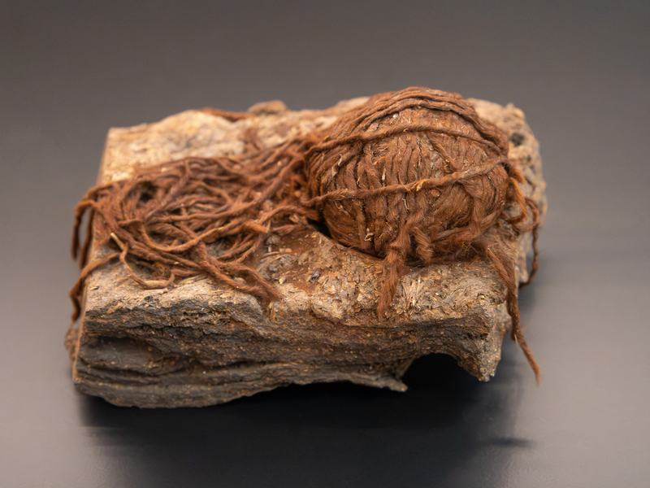
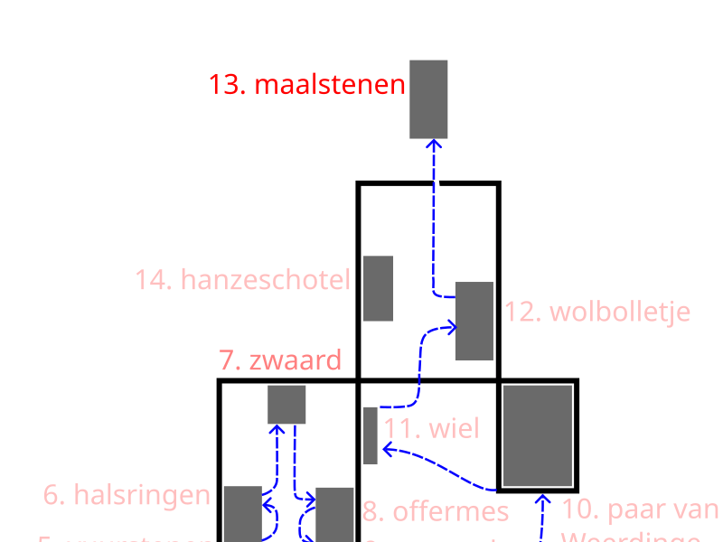

12. Bolletje wol van Roswinkel ca 800-600 v Chr


Dit bolletje wol uit de ijzertijd (rond 600 voor Christus) is gevonden in de (hoog)venen bij Roswinkel in ZO-Drenthe. Dat de wol zo goed bewaard is gebleven, komt doordat hij in een natte en zuurstofarme omgeving lag, waar organisch materiaal niet snel vergaat. In Drentse veengebieden zijn meerdere zeldzame wolkluwen (opgerolde bollen wolgaren) gevonden uit de late Bronstijd en vroege IJzertijd (ca. 1000-500 v.Chr.), o.a. in Smilde.
Deze bolletjes wol, zijn een zeldzaam voorbeeld van prehistorisch textiel in Nederland; ze tonen dat vrouwen al toen wol spinden voor textiel. Ze werden waarschijnlijk bewust in het veen neergelegd als rituele giften voor vruchtbaarheid, gezondheid of een gezonde schapenkudde.
Het volgende luisterpunt is 13. Maalstenen uit Haaksbergen.